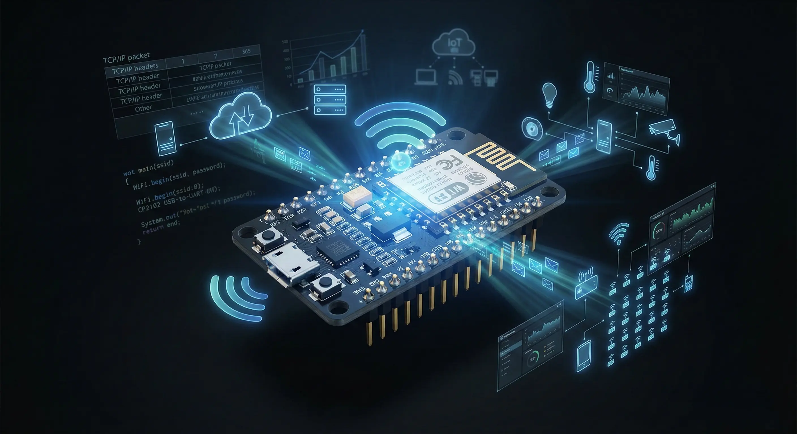

IoT

ESP8266: The Board That Turns Hardware Into a Networked System
The ESP8266 is an engineering gateway — from isolated hardware to connected intelligence. Learn how this board teaches networking protocols, cloud integration, and scalable IoT system design.
Read Article